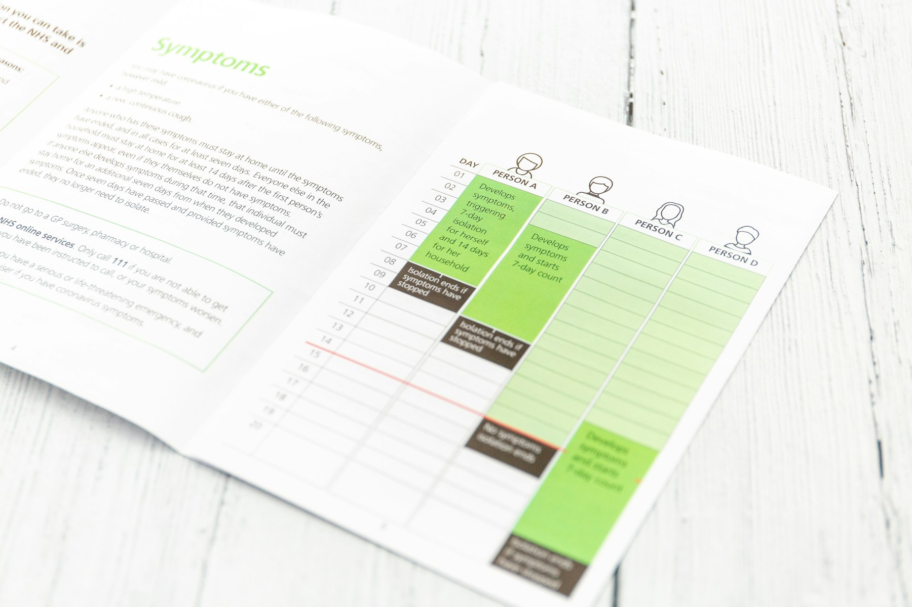

TL;DR
Start with $200/month in index funds like VTI. Avoid crowded stocks and diversify simply. Use tools like Personal Capital for tracking.
Quick Answer: Your First Investment Options
If you’re just starting, consider investing in low-cost index funds like the Vanguard Total Stock Market ETF (VTI) or a target-date retirement fund. By setting aside $200 each month, after 30 years, you could potentially have around $180,000, assuming an average annual return of 7%. This approach allows you to take advantage of dollar-cost averaging, reducing the impact of market volatility.
For example, if you chose a target-date fund with a retirement target of 2060, your investment would automatically adjust its asset allocation as you age, shifting from higher-risk stocks to more stable bonds. While individual stocks can yield significant gains, they also carry higher risks—one bad earnings report can drastically affect your investment.
Why Most Beginners Pick the Wrong AI Stocks
The allure of rapid returns can mislead beginners into selecting volatile AI stocks that promise quick gains. Many newcomers fall prey to the misconception that higher-priced stocks automatically signal superior performance.
For example, in late 2021, NVIDIA shares surged to around $300, creating a buzz among inexperienced investors who believed the stock would continue its upward trajectory. However, when the market corrected in early 2022, NVIDIA's stock plummeted to approximately $160, catching many off-guard and resulting in significant losses.
Moreover, beginners often react emotionally to market fluctuations. For instance, during the COVID-19 pandemic, many rushed to invest in popular tech stocks without sufficient research, only to face drastic declines as market conditions worsened. A staggering 40% drop in the value of many high-flying tech stocks in just a few months highlighted the risks associated with impulsive buying.
It's crucial to emphasize the importance of timing and the patience required in long-term investing. Realistic numbers show that historically, the stock market averages a return of about 7-10% per year when adjusted for inflation.
A 30-Day Screening Process for Your Investments
Establishing a systematic investment plan can be beneficial for beginners. Here’s a simple, structured three-step process to follow over a 30-day period:
- Set Your Goals: Define specific, measurable objectives over different time frames.
For example, aim to save $10,000 in 5 years for a home down payment, or accumulate $100,000 in a retirement fund over 10 years. Writing these goals down will help you stay focused and motivated.
- Research: Dedicate 10-15 minutes daily to exploring investment options. Utilize resources like Yahoo Finance and Morningstar to check the performance of various exchange-traded funds (ETFs) or index funds.
For instance, you might find that the Vanguard Total Stock Market ETF (VTI) has an impressive annual return of 7% over the past decade with a low expense ratio of 0.03%. During this period, be mindful of market trends; for example, if tech stocks are trending upward, you may consider funds heavily weighted in that sector.
- Review and Adjust: After 30 days, go over your notes and findings. At this point, select one index fund, such as the S&P 500 ETF (SPY), to invest your predetermined monthly budget.
A Real Scenario for Beginner Investors
Imagine a beginner investor, Emma, who decides to embark on her investment journey with just $100 per month. Instead of waiting until she accumulates a larger sum, she opts for a consistent investment strategy.
Each month, Emma allocates $60 to a broad market ETF, like the SPDR S&P 500 ETF Trust (SPY), $20 into a dividend ETF such as the Vanguard Dividend Appreciation ETF (VIG), and keeps the remaining $20 in cash or a conservative bond fund like the iShares U.S.
Treasury Bond ETF (GOVT) for stability.
In the first few months, Emma’s account may seem small. By the end of month three, she will have contributed $300, which might feel insignificant compared to those who invest larger sums all at once. However, the key shift is behavioral; Emma is developing a routine that helps her sidestep the emotional rollercoaster of trying to time the market.
For instance, three months into her plan, the stock market experiences a dip due to economic headlines. Many novice investors might panic and hesitate to invest, fearing further losses. But Emma continues her contributions, buying more shares at a discounted price.
Mistakes That Cost Real Money

Beginners often fall into costly traps that can significantly impact their portfolios, leading to frustrating financial outcomes. Two prevalent mistakes include:
- Neglecting Diversification: A common pitfall is investing all funds into a single stock.
For instance, someone might invest $10,000 entirely in a popular tech company, like XYZ Corp. If that company faces a downturn due to a bad earnings report or a product failure, your entire investment could plummet.
In contrast, a diversified approach—spreading that $10,000 across five different sectors with Exchange-Traded Funds (ETFs)—not only mitigates risks but also smoothes out potential volatility.
By allocating an equal amount of $2,000 across various ETFs (like those focused on technology, healthcare, consumer goods, renewable energy, and financials), you insulate your portfolio against the whims of any single sector.
- Reacting to Short-Term Trends: Many beginners get swept up in market hype, leading them to make impulsive decisions that can cost them dearly. Consider the 2021 boom in meme stocks, where investors poured money into companies like GameStop and AMC Entertainment without understanding their fundamentals.
Which Tools or ETFs Make This Simpler
To streamline your investing process, consider using tools like Personal Capital for tracking your investments or Morningstar for evaluating mutual funds and ETFs. Personal Capital provides a comprehensive dashboard that allows you to see your net worth, asset allocation, and performance across various accounts, all in one place.
Morningstar, on the other hand, offers detailed analysis and ratings for ETFs, helping you make informed decisions.
For example, if you’re looking for beginner-friendly ETFs, consider the Vanguard Total Stock Market ETF (VTI) and the iShares Core S&P 500 ETF (IVV). Both have expense ratios under 0.1%, meaning you'll pay just $1 annually for every $1,000 invested.
This low cost is crucial for beginners who need to maximize their returns over time. Additionally, these ETFs cover a broad spectrum of the market, providing a solid foundation for your portfolio with diversified exposure.
FAQ
What are the best investment options for beginners?
Best options include low-cost index funds like Vanguard Total Stock Market ETF (VTI) and SPDR S&P 500 ETF (SPY).
How much should I invest each month for retirement?
Investing at least $200 monthly can build a significant nest egg over time, especially in index funds.
What mistakes should beginners avoid in investing?
Avoid concentrating investments in one stock and reacting emotionally to market fluctuations.
This article has been reviewed for practical usefulness and will be updated when new information becomes available.
Next step
Use the article as a decision point, not just reading material. Your next system matters more than more browsing.
Search more articles
Find related tools, workflows, and guides.
Photo credits
- Photo 1: dife88 via Pixabay
- Photo 2: geralt via Pixabay
- Photo 3: Marija Zaric via Unsplash
- Photo 4: Cht Gsml via Unsplash
- Photo 5: iMattSmart via Unsplash